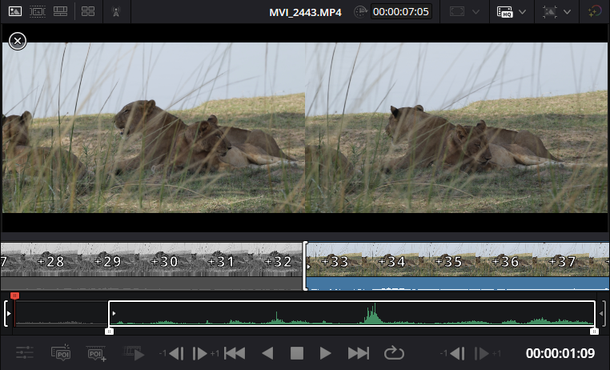

Use the Source Viewer
Overview
Use the Source Viewer to preview media in the Media Pool. Set in and out points to prepare clips for the timeline.
Procedure: Preview clips in the Source Viewer
- Open media in the Source Viewer by doing one of the following:
- Double-click a media file in the Media Pool
- Select an item in the Media Pool or Timeline and select Source Clip in the timeline viewer
- Use playhead controls to preview the clip
Procedure: Set in and out points
Use one of the following methods to set in and out points:
- Use the waveform bounding box
- Drag the left edge to the right to mark the in point
- Drag the right edge to the left to mark the out point

- Use the source viewer playhead
- Move the playhead to the in point and select Ctrl + i
- Move the playhead to the out point and select Ctrl + o
Media: video, audio, or image files used in a project.
Clip: a piece of a video or audio file used in a timeline.
Timeline: a sequence of clips arranged in the editor.
Playhead: a marker that shows the current position in a timeline or clip.